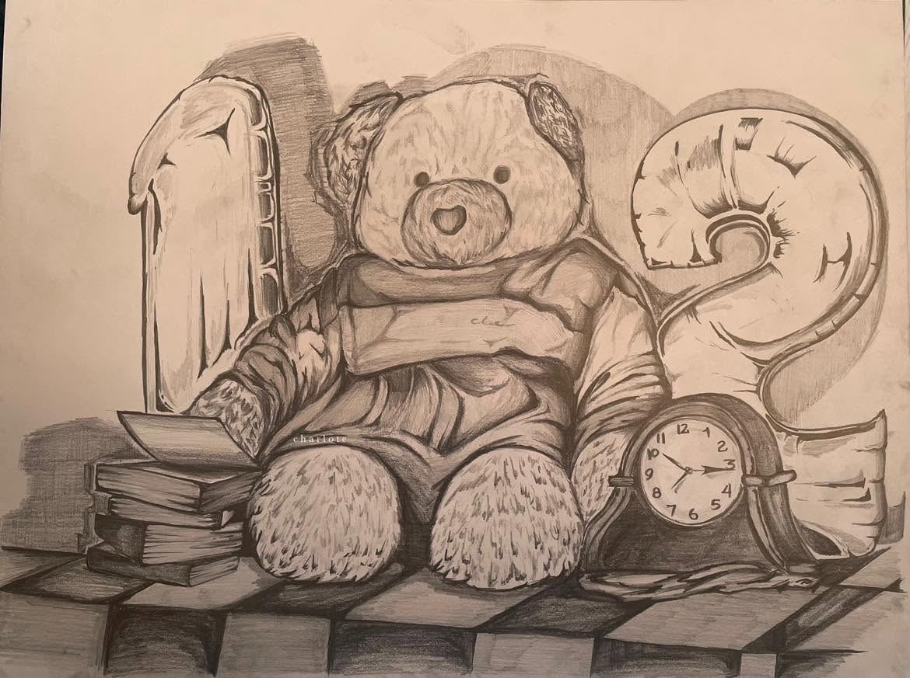
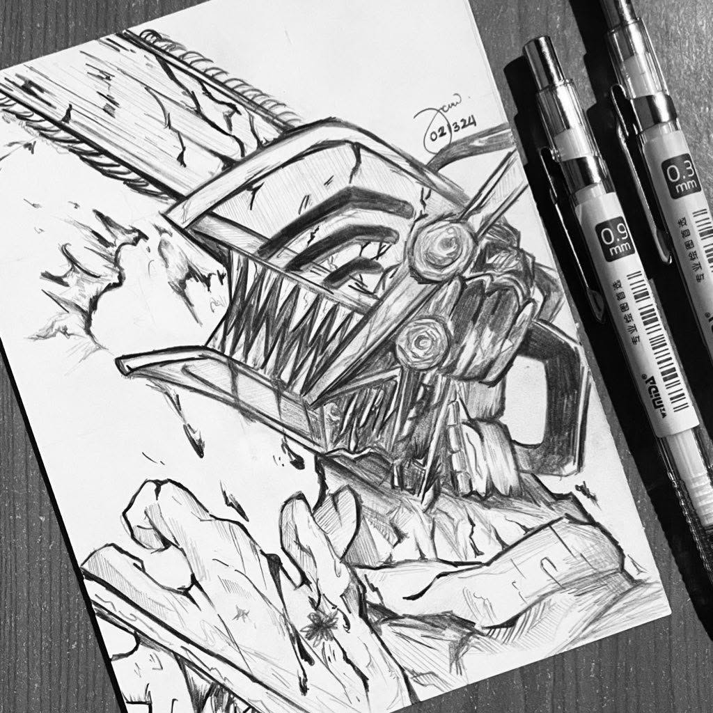
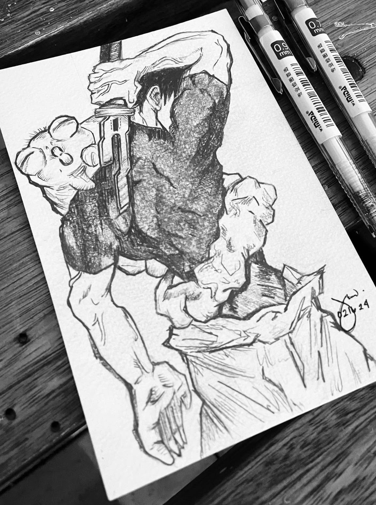
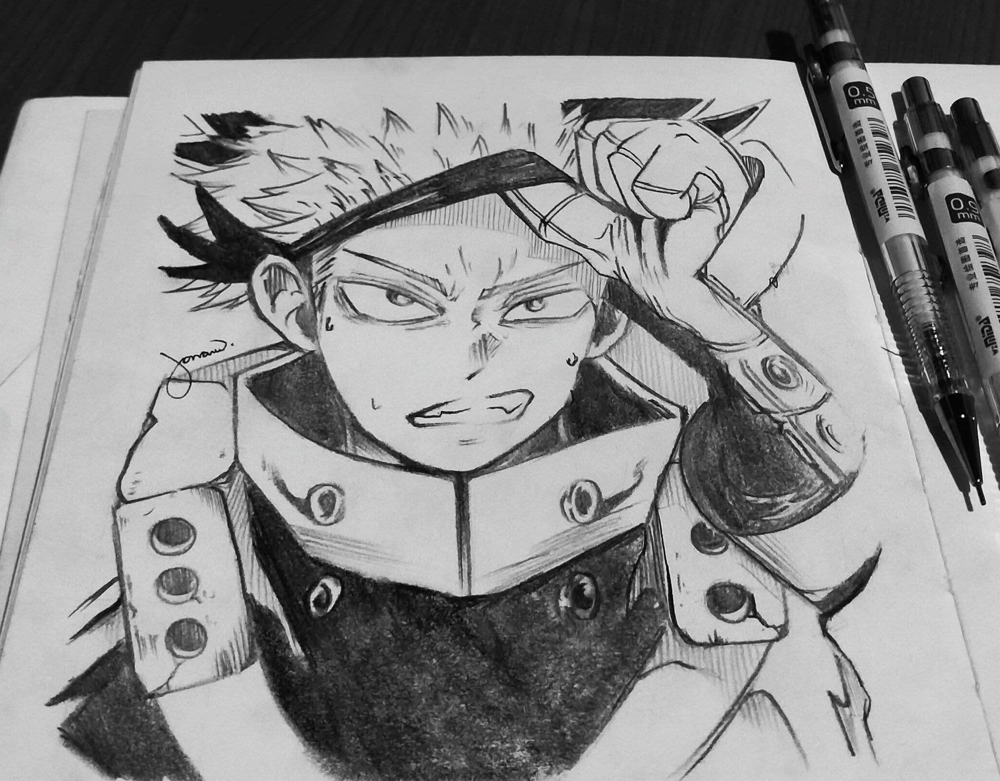
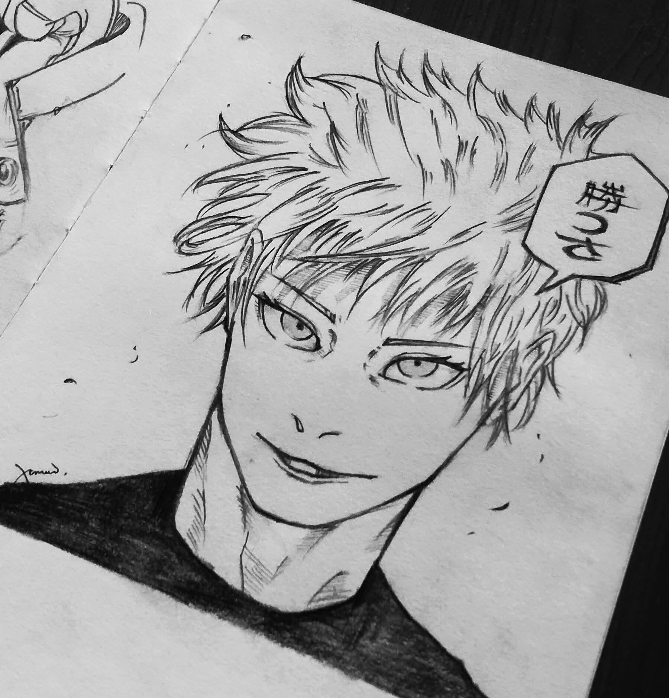
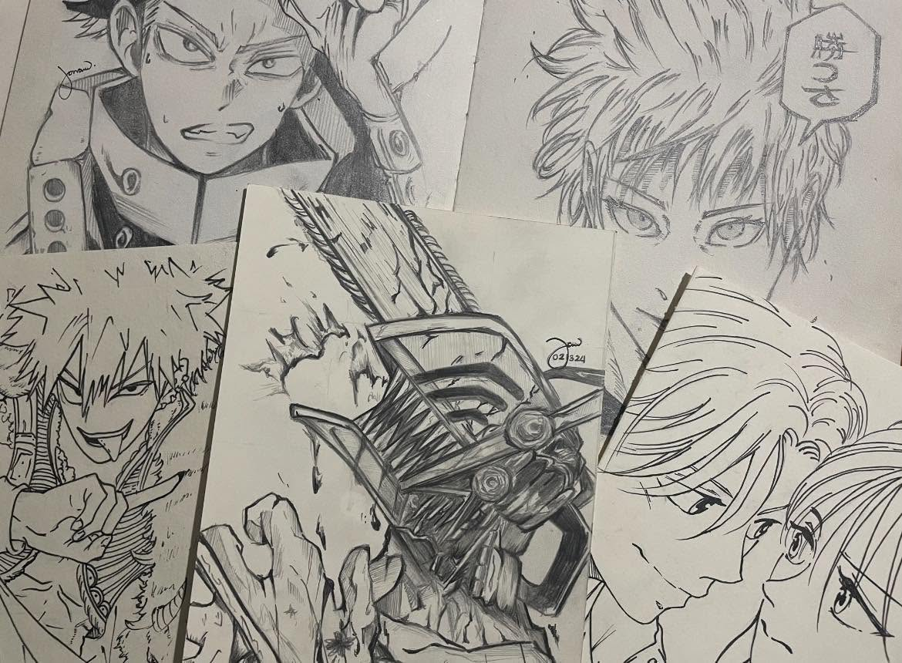
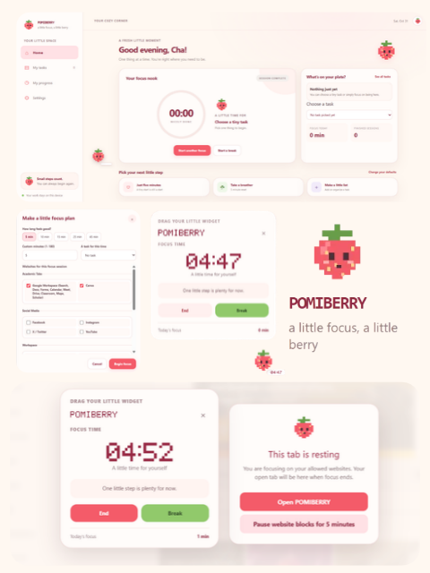
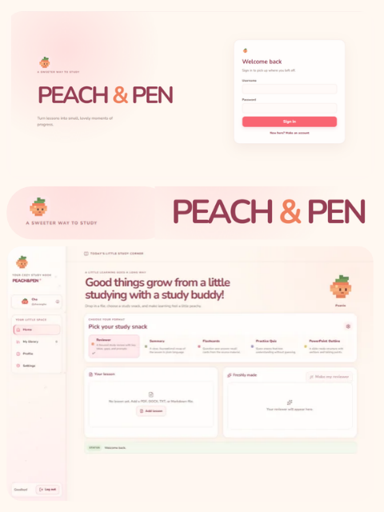
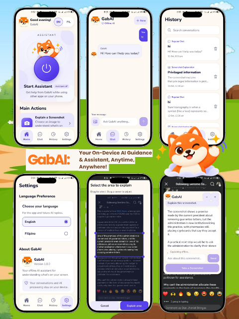

A little more
you-time.01
you-time.
A gentle self-care app concept exploring calm visual design and an easy-to-follow daily check-in.
A COLLECTION OF IDEAS
Explore projects across design,
illustration, and technology.
01 / THINK
Thoughtful interfaces, useful flows,
and little details that make a product feel right.
A gentle self-care app concept exploring calm visual design and an easy-to-follow daily check-in.
This is a concept preview. Add your finished screens, process, and case study here when they’re ready.
NEXT: GRAPHIC DESIGN02 / MAKE
Color, type, and visual identities
made to say something with feeling.
A playful poster concept built around cheerful type and bright, optimistic color.
A warm identity concept celebrating growth through a friendly palette and floral details.
These are concept previews. Add your final artwork, project context, and design process here.
NEXT: ILLUSTRATION03 / PLAY
Small worlds, expressive shapes,
and ideas brought to life through drawing.
 01
01Two onion fairies exploring a whimsical garden.
 02
02A colorful burst of flower-like shapes, lines, and patterns.
 03
03A whimsical portrait surrounded by colorful, playful details.
Select an illustration to view its artwork and details.
SKETCHBOOK
Original pencil studies from my sketchbook.

01Still life pencil drawing where I represented the TUP Manila last March 5, 2026 where I won as 3rd Place against 7 State University and Colleges around NCR

02Drawn with a mechanical pencil on vellum board.

03Drawn with a mechanical pencil on watercolor paper.

04Drawn with a mechanical pencil and graphite on smooth paper.

05Drawn with a mechanical pencil on smooth paper.

06A collection of pencil sketches from my sketchbook.
Select a drawing to view it larger with its materials and story.
NEXT: TECH PROJECTS04 / BUILD
Bringing visual ideas to life
with thoughtful, responsive interfaces.

02POMIBERRY is a cozy, local-first floating desktop focus assistant featuring a friendly strawberry pixel-art mascot. It helps you initiate tasks and stay on track using a draggable timer widget, flexible focus sessions, site restriction tools, and optional local AI task breakdowns—all kept private, offline, and calm on your device.

02PEACH&PEN is a cozy study nook for your desktop. Upload your lesson files (PDF, DOCX, PPTX, TXT) and instantly transform them into reviewers, summaries, flashcards, practice quizzes, and PPT outlines with stored prompt templates.

02GabAI is an offline-first Android accessibility assistant featuring a floating overlay that extracts on-screen text, simplifies complex digital content into accessible Filipino or English using local AI, and reads it aloud to assist users.
Role: Project Manager and UI/UX Designer
Add links to more tech projects, demos, or code repositories here as your collection grows.